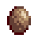

Minerais de coleta
| Imagem | Nome | Descrição | Preço de venda | Local | Usado em |
 |
Quartzo | Um cristal transparente encontrado em cavernas e minas. | 25 ouros |
As Minas 1-120 Lata de lixo |
Conjunto de Geólogo Quartzo refinado |
 |
Cristal de terra | Substância resinosa encontrada perto da superfície. | 50 ouros |
As Minas (Níveis 1-39) Cavador (10%) Baús de Tesouro Peneira de cobre Geodo Omnigeodo Lata de lixo |
Conjunto de Geólogo Máquina de maionese |
 |
Lágrima congelada | Um cristal que dizem ser as lágrimas congeladas de um ieti. | 75 ouros |
As Minas (Níveis 40-79) Baús de Tesouro Peneira de cobre Geodo congelado Omnigeodo Espírito da poeira (2%) Lata de lixo |
Conjunto de Geólogo Anel de guerreiro Sebastian ama. |
 |
Quartzo de fogo | Um cristal brilhante geralmente encontrado perto do magma. | 100 ouro |
As Minas (Níveis 80-120) Baús de Tesouro Peneira de cobre Geodo de magma Omnigeodo Lata de lixo |
Conjunto de Geólogo Prensa de Gosmas Quartzo refinado |
Gemas
| Imagem | Nome | Descrição | Preço de venda | Local | Usado em |
 |
Esmeralda | Uma pedra preciosa com uma cor brilhante e verde. | 250 ouros |
Nó de Esmeralda Nó de Gemas Peneira de cobre Lata de lixo Baús de Tesouro Festival da Estrela Invernal |
Clint, Anão, Emily, Penny amam. |
 |
Água-marinha | Uma pedra brilhante cor d'água. | 180 ouros |
Nó de Água-marinha Nó de Gemas Peneira de cobre Lata de lixo Baús de Tesouro |
Conjunto Tinta Clint, Anão, Emily amam. Braseiro de mármore |
 |
Rubi | Uma pedra preciosa cobiçada por sua cor e lustre maravilhosos. | 250 ouros |
Nó de Água-marinha Nó de Gemas Peneira de cobre Lata de lixo Baús de Tesouro |
Clint, Anão, Emily amam. |
 |
Ametista | Uma variante roxa do quartzo. | 100 ouro |
Nó de Ametista Nó de Gemas Gosmas Peneira de cobre Lata de lixo Baús de Tesouro |
Abigail, Clint, Anão, Emily amam. |
 |
Topázio | Muito comum, mas ainda admirado por sua beleza. | 80 ouro |
Nó de Topázio Nó de Gemas Peneira de cobre Lata de lixo Baús de Tesouro |
Clint, Anão, Emily amam. |
Geodos
| Imagem | Nome | Descrição | Preço de venda | Local |
|  | Geodo | Um ferreiro pode quebrar isto para você. | 50 ouros |
As Minas (Leveis 1-39) Drops do Cavador Cavando na Fazenda Festival da Estrela Invernal |
 |
Geodo congelado | Um ferreiro pode quebrar isto para você. | 100 ouros |
As Minas (Leveis 41-79) Baús de Tesouro Cavando na Fazenda (Inverno) Festival da Estrela Invernal |
 |
Geodo de magma | Um ferreiro pode quebrar isto para você. | 150 ouros |
As Minas (Leveis 81-120) Baús de Tesouro Festival da Estrela Invernal |
 |
Omnigeodo | Um ferreiro pode quebrar isto para você. Estes geodos contém vários minerais. | 0 ouro |
As Minas Caverna da Caveira Peneira de cobre No Oásis (nas Quartas) Krobus (nas Terças) |